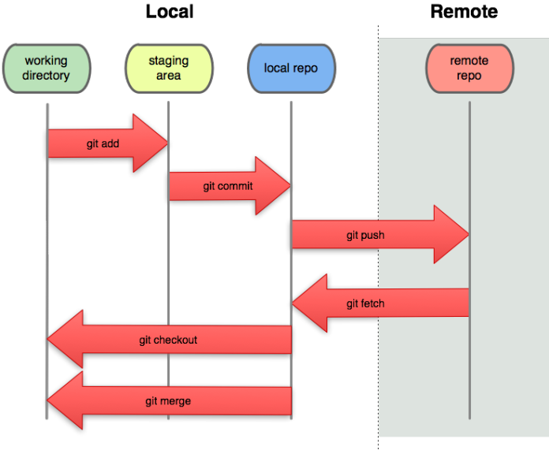

Taller de GIT
Eugenio & Coyote & Nacho
Created: 2016-10-16 Sun 20:15
Curso de Git - 2016 2017
Introdución
Control de versiones


GIT
- Control de versiones
- Potencia el desarrollo de código distribuido.
- Y mola mucho
Instalar GIT
sudo pacman -S git sudo apt-get install git
Configurar GIT
git config --global user.name "Your Name"
git config --global user.email "your_email@whatever.com"
git init
git remote add {nombreDelRemoto} {URLDelRepositorio}
git clone
Git vs Otros entornos. ¿Por qué git?
SVN
Mercurial
Estructura de Git

Comandos de git. Desde lo más útiles a los salvavidas
Add & Commit
git add [files] git add . #Añadiría todos los cambios al index git add *.java #Añadiría únicamente aquellos archivos modificados que terminen en .java git add directorio/ #Añadiría el directorio y TODO SU CONTENIDO al index
git commit [--ammend] [-m "Mensaje del commit"] git commit -m "Hello World Completado" git commit -a -m <mensaje> # Equivalente a git add --all y git commit -m "Mensaje"
Push
git push [<remote>] [<branch>] git push #Equivalente a git push <remote>, solo si existe el remoto git push <remote> master # push de los cambios a la rama master del remoto
Pull
git pull git pull origin # git fetch && git merge FETCH_HEAD
Merge
Conflictos
Buenas praxis de git
Magit
Integración con otras herramientas/entornos
Recuros
- Git Book
- PDF, EPUB, MOBI, HTML
- try.github.io